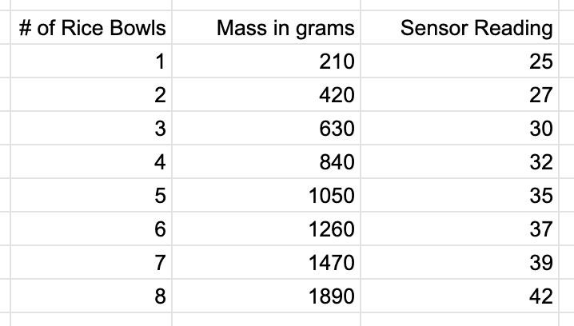
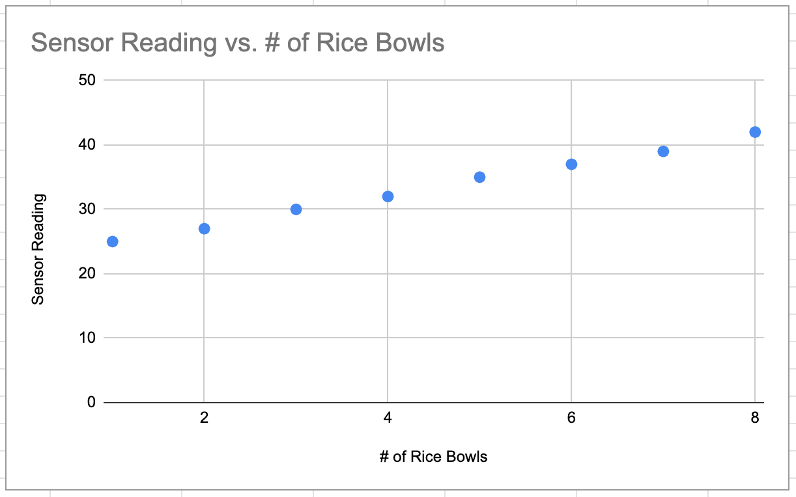
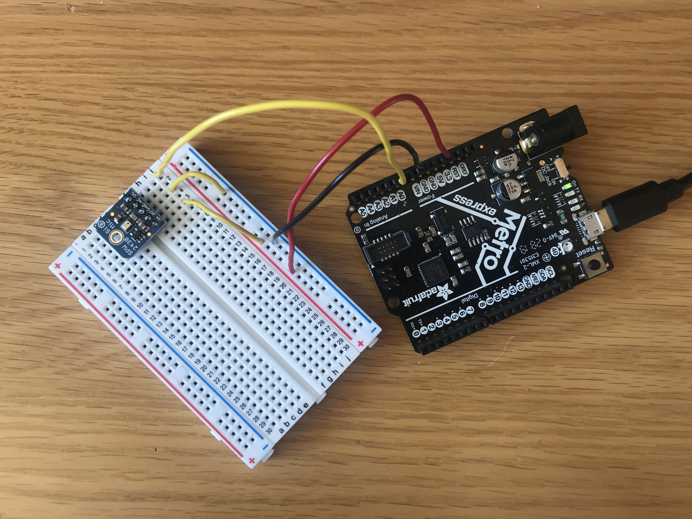

Week 6: Electronic Input Devices
In class this week, we started playing around with capacitive sensors. They're the things that allow us to use touch screen on our electronic devices! I set mine up and put the sensors between a hand towel, and I tested it by pressing down on it while looking at the Arduino serial monitor. To more accurately measure the force, I needed to get identical objects that I could add on top of the sensors since I didn't have a scale. I had a number of these microwaveable rice bowls in my room, which had their weight on their label, so I took them and recorded the changes as I stacked the rice bowls on top of the sensors.

Since I knew how much each rice bowl weighed (each one being 210 g), I could calibrate the sensor readings. Below is a table and graph showing how the sensor readings increased as I added an additional bowl.
 For my second sensor, I chose to use the microphone and followed the tutorial from the course website.
I decided to calibrate this one by playing a song and pressing the side buttons on my iPhone until it was the max volume. So I found out that it takes 16 pushes to get all the way to the max volume. The microphone didn't actually pick up any changes until the 3rd "level". So if you count the peaks starting from 3, you'll get to 16. Each increment didn't reflect the same amount of change in the readings, so I found that interesting. Could this mean that for some volume levels, it's no louder than some of the previous levels?